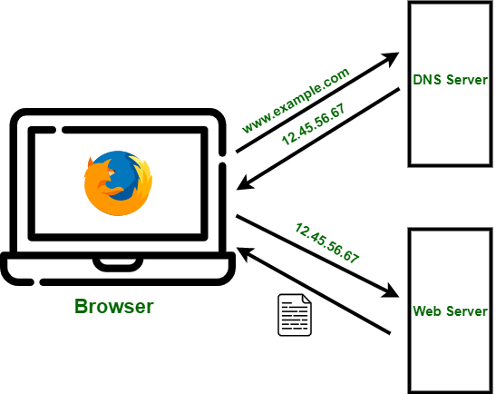

¿Cómo funciona el DNS?
Cuando escribes un dominio en tu navegador:
- El navegador consulta al servidor DNS....
- El servidor busca la dirección IP correspondiente.
- Devuelve la IP al navegador.
- El navegador se conecta al servidor web.
Este proceso ocurre muy rapido para que la página cargue correctamente.
